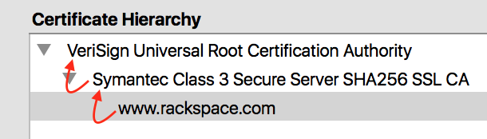

The Hitchhiker's Guide to TLS
Slides
https://www.lvh.io/hhgtls
Introduction
Glyph Lefkowitz
Senior Software Engineer, Rackspace
Invented Twisted
glyph.lefkowitz@rackspace.com, @glyph
lvh
Principal Engineer
Rackspace Managed Security
lvh@rackspace.com, _@lvh.io, @lvh
Paul Kehrer
Principal Engineer
Rackspace Managed Security
paul.kehrer@rackspace.com, @reaperhulk
High-level overview of TLS
What is TLS/SSL?
- Transport Layer Security/Secure Sockets Layer
- The protocol for protecting data in motion
Why do you want TLS?
- Identity
- Confidentiality
- Integrity
Where do we use TLS?
- Clients (browsers, API clients)
- Middleware (LBs, WAFs…)
- Servers
Timeline
- 1995: SSL 2.0 (Netscape)
- 1996: SSL 3.0 (Netscape)
- 1999: TLS 1.0 (IETF), ~SSLv3
- 2006: TLS 1.1 (IETF)
- 2008: TLS 1.2 (IETF)
- 2016?: TLS 1.3 (IETF)
Poor adoption of new versions
- Last thing called SSL is 20yrs old
- We should stop calling it that
- TLSv1.2 is 8yrs old yet support is spotty
TLS has been around for a while
- Lots of lumiferous aether era crypto
- Lots of export-grade crypto
- Still the thing you want, I promise
Certificates
Reminder: TLS gives you identity
You're talking to whom you think you're talking to.
Trust models
Almost always: certificate authorities (CAs)
Big idea
I don't trust you,
but the CA trusts you,
and I trust the CA.
Where do you get CAs?
Comes with your {OS, browser, runtime…}
certifi
Example

Underlying CA
A shady cabal if there ever was one
LetsEncrypt
Ciphersuites
Remember the TLS handshake
What's in a ciphersuite?
How do we:
- … sign our interaction?
- … agree on keys?
- … encrypt bulk data?
- … authenticate bulk data?
Signing
Public key is in your certificate
Almost always RSA Rarely ECDSA
Key exchange
How do we agree on keys?
Perfect forward security
If a private key is compromised,
can an attacker decrypt?
Why non-PFS ciphersuites?
Used to be much slower
DHE is slow, but ECDHE is fast
It's not a bug, it's a feature!
Decrypting middleware, like WAFs
Non-PFS is dying
TLSv1.3 does not support non-PFS suites!
Key exchange options
| Fast? | PFS? | |
|---|---|---|
| RSA | ✓ | ✗ |
| DHE | ✗ | ✓ |
| ECHDE | ✗ | ✓ |
Bulk encryption
Good options
- AES
- ChaCha20
Bad options
- EXP ("export grade")
- RC4
- DES (3DES OK but not great)
MAC
Good news
- Usually don't have to worry
- Good bulk enc + recent TLS = good MAC
AEAD
Combines encryption + MAC
- Mostly performance
- Arguably security
Good options
- GCM
- Maybe one day OCB
How do you pick ciphersuites?
- https://wiki.mozilla.org/Security/Server_Side_TLS
- Sometimes depends on your clients
High-level advice
!EXP!RC4ECDHEAESGCM
Auditing TLS configuration
Qualys' SSLTest
But my website is internal!
Clients
What does a TLS client do?
Pretty much just verify the cert
What does "verify" mean?
It's complicated, but, roughly:
- Does the hostname match?
- Is the certificate still valid?
- Is there a trusted chain?
How do I verify a cert?
Ooooh boy.
So much software gets it wrong
Python stdlib
17.3.7.2.1. Verifying certificates
When calling the SSLContext constructor directly, CERT_NONE is the
default.
Big problem
- Current state often better, but old software
- Current docs often better, but old skills
service_identity
Playing around with clients
Using requests
Easy! Fun! Probably safe!
Using Twisted endpoints
Servers
Configuring TLS servers
Cert pinning
Reminder: CAs are your trust root
You trust x is x because a CA said so
Rogue CA?

Planted root CA?
- Part of an attack
- Mandated by employer
Mandated by employer?
Having internal CA makes sense
Name constraints
Forgery as a Service
e.g sslbump
Cert pinning
Babylonian confusion
- Sometimes means "trust exactly this cert"
- Sometimes, you have to rotate a key
GMail should be signed by Google
Browsers (esp. Chrome) should know this
Forgery as a Service
HSTS
HTTP Strict Transport Security
Some sites should always HTTPS
Browsers should know this
HSTS header
Strict-Transport-Security: max-age=31536000
Opt-in!
Only works on next-use
HSTS preloading
Used by all major browsers
Opt-in
Strict-Transport-Security: max-age=31536000; preload
HPKP
HTTP Public Key Pinning
DigiCert is my CA, not the DoD
Browsers should know this
Specify which CA(s) in HSTS
Early stages!
- Chrome has a hardcoded list
- Firefox working on it
- Spec is a WIP
Alternative trust chains
Self-signed certs
Problem: key rotation
Conclusion
- Probably not
- Must control client, server deploys in lockstep
Running your own internal CA
CAs aren't magic
CA=true

We can do that ourselves!
… just gotta trust my root cert
Freedom in issuing certs
- ECDSA? Sure!
- 1000 client certs? Sure!
Protection against rogue CA
Mossad threat model
Operational challenges
How securely can you run a CA?
Client certificates
Recap: "normal" TLS
- Server is authenticated by TLS (certificate)
- Client is not authenticated by TLS
- Client auth happens in app layer
- Login form, cookies, …
Alternative: client certificates
Both peers exchange & verify certs
Who signs your certs?
Probably need your own CA
Client library support
Usually possible, rarely obvious
SNI
(Server Name Indication)
Problem
- Client connects to website, looks up IP
- Expects TLS with cert for correct hostname
- What if I host multiple sites on 1 IP?
Historical reason TLS is expensive
- 1 site per public IPv4 address
- IPv4 addresses are expensive
- ⇒ TLS is expensive
No longer true!
Example: txsni
mkdir certificates cat private-stuff/mydomain.key.pem >> \ certificates/mydomain.example.com.pem cat public-stuff/mydomain.crt.pem >> \ certificates/mydomain.example.com.pem cat public-stuff/my-certificate-authority-chain.crt.pem >> \ certificates/mydomain.example.com.pem twistd -n web --port txsni:certificates:tcp:443